İstatistiksel bir modelde, genellikle bir tane çıktı değişkeni (Bağımlı Değişkeni, sonuç, \(y\) ) ve bir veya daha fazla girdi değişkeni (Bağımsız Değişken, neden\(x\) ) bulunur.
Tek bir değişkenin dağılımını bir histogram veya yoğunluk grafiği ile görselleştirilirken iki sayısal değişken arasındaki ilişkiyi görselleştirmek için yaygın olarak saçılım grafiği (scatterplot) kullanılır. Saçılım grafiği, “istatistiksel grafik tarihinin en genel faydalı icadı” olarak adlandırılmıştır. Her bir noktanın iki koordinatının, tek bir gözlem üzerinde ölçülen iki değişkenin değerlerini temsil ettiği basit bir iki boyutlu grafiktir.
Rows: 104 Columns: 14
── Column specification ────────────────────────────────────────────────────────
Delimiter: ","
chr (2): Pop, sex
dbl (12): case, site, age, hdlngth, skullw, totlngth, taill, footlgth, earco...
ℹ Use `spec()` to retrieve the full column specification for this data.
ℹ Specify the column types or set `show_col_types = FALSE` to quiet this message.
ggplot(data = possum, aes(y = totlngth, x = taill)) +geom_point()
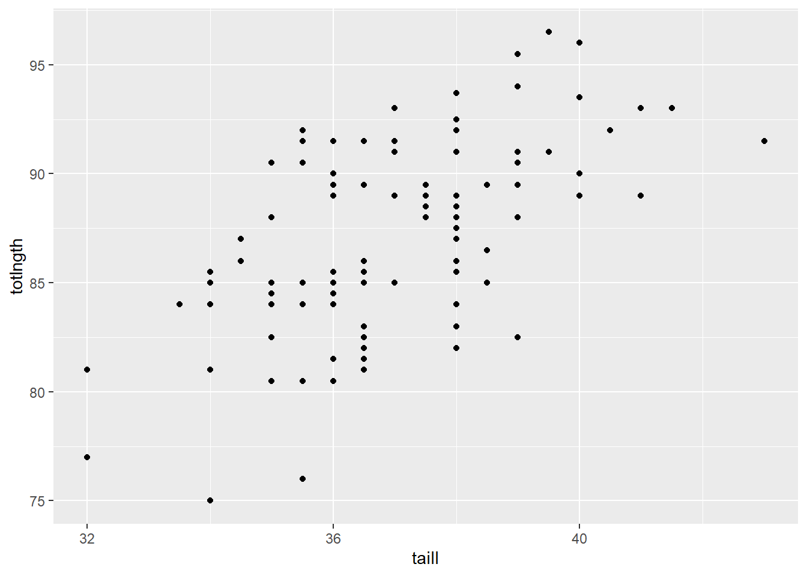
Netlik sağlamak için, eksenlerine okunabilir etiketler vermek önemlidir. Bunu labs() işleviyle yapabiliriz. Eksen etiketlerine gerekli birimleri dahil etmek iyi bir veri görselleştirme uygulamasıdır!
ggplot(data = possum, aes(y = totlngth, x = taill)) +geom_point(size =2) +geom_smooth(method ="lm", color ="black", se =FALSE) +labs(x ="nKuyruk Uzunluğu (cm)",y ="Toplam Vücut Uzunluğu (cm)n" ) +theme_classic() # Klasik temayı uygula
`geom_smooth()` using formula = 'y ~ x'
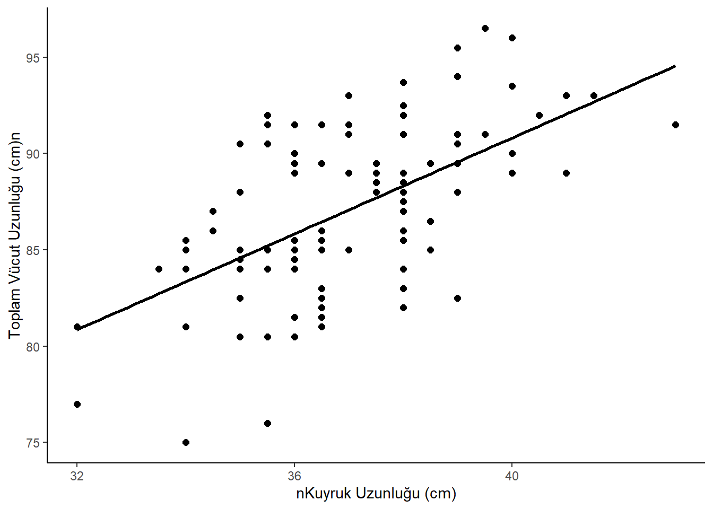
Bu grafiğe regresyon eğrisinin denklemini yazarak devam edelim. ggpubr paketini kullanabiliriz
library(ggpubr) ggplot(data = possum, aes(x = taill, y = totlngth)) +geom_point(size =2, color ="black") +geom_smooth(method ="lm", color ="black", se =FALSE) +# Regresyon denklemini otomatik olarak ekle (stat_regline_equation)# label.y ve label.x ile denklemin grafikteki konumunu ayarlıyoruz.stat_regline_equation() +labs(x ="Kuyruk Uzunluğu (cm)",y ="Toplam Vücut Uzunluğu (cm)" ) +theme_pubr()
`geom_smooth()` using formula = 'y ~ x'
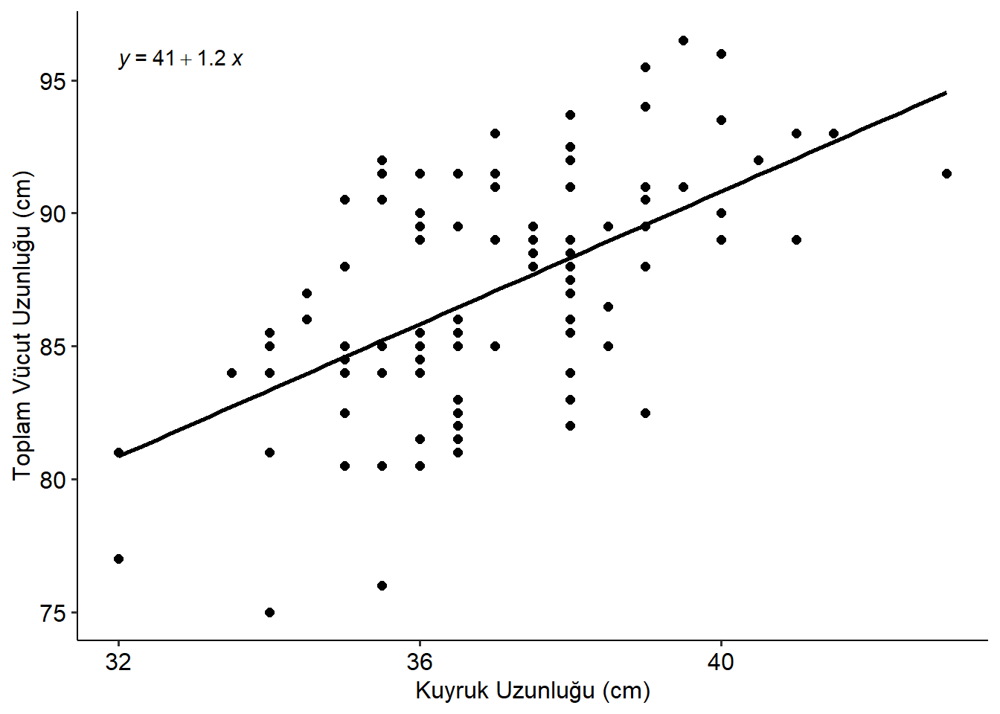
ggscatter fonksiyonu ile saçılım grafiği oluşturabiliriz. Bu fonksiyon, regresyon çizgisi, güven aralığı ve korelasyon katsayısı gibi ek özellikleri kolayca eklememizi sağlar.
library(ggpubr)ggscatter(possum, x ="taill", y ="totlngth",add ="reg.line", conf.int =TRUE, cor.coef =TRUE, cor.method ="pearson")
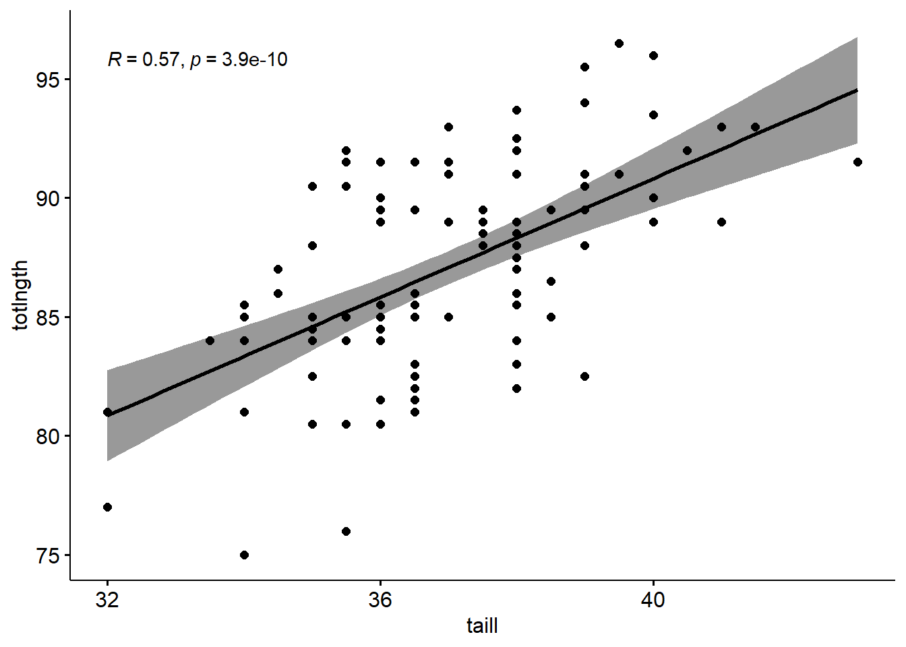
1.2 Kutu Grafikleriyle Bağlantı
Bir saçılım grafiğini yan yana kutu grafiklerinin sürekli bir genellemesi olarak düşünülebilir.
Burada, orijinal taill değişkeni üzerinde cut() işlevini kullanarak tail_cut adında yeni bir değişken oluşturuyoruz. Daha sonra bu yeni değişkeni orijinal possum veri kümesine geri kaydediyoruz.
Daha sonra, toplam uzunluk ile yeni tail_cut değişkeni arasındaki ilişkiyi çizebiliriz. Yaptığımız şey, bu bölmelerdeki tüm veri noktalarını toplayıp, orijinal kuyruk uzunluğu değerlerinde değil, dikey bir çizgi halinde çizdirmektir.
ggplot(data = possum, aes(y = totlngth, x = tail_cut)) +geom_point()
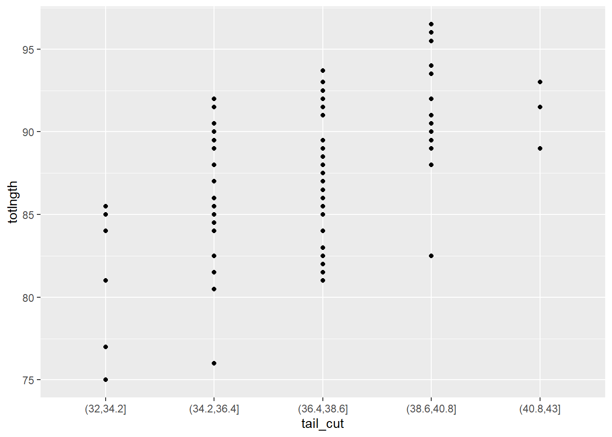
Bu tür bir nokta grafiği standart değildir. Daha yaygın olanı, bu noktaların dağılımının yan yana kutu grafiklerini oluşturmaktır. geom_point() yerine geom_boxplot()’a geçersek, bu daha “standart” görselleştirmeyi elde ederiz.
ggplot(data = possum, aes(y = totlngth, x = tail_cut)) +geom_boxplot()
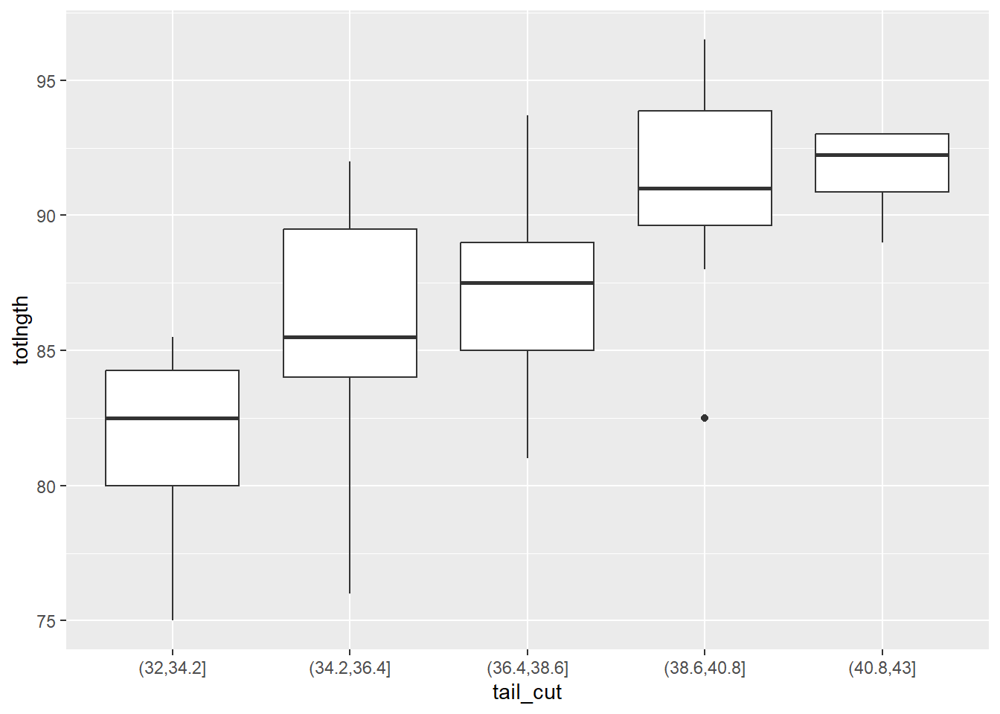
Bir saçılım grafiğinin kayda değer bir özelliği, ham verilerle olan bağlantısıdır. Bir kutu grafiği ise, yalnızca verilerin özetlerini çizerek ham verilerden tamamen kopuktur. Bu bağlantıyı yeniden kurmak için, orijinal veri noktalarını kutu grafiklerinin üzerine katmanlayabiliriz, sadece ggplot()’ımıza bir katman daha ekleyerek!
Aşağıdaki kodun birkaç bölümünü inceleyelim. İlk olarak, kutu grafiklerine outlier.alpha = 0 ekledik, böylece “aykırı” noktalar çizilmez (bunları iki kez çizmek istemiyoruz). geom_point() işlevi yerine geom_jitter() işlevini kullandık, çünkü noktalar üst üste çiziliyor. Jittering’i, üst üste çizilmiş grafiği (noktaların çakıştığı yer) alıp ona küçük bir sallama vermek olarak düşünebilirsin. Jittering, noktaları biraz yanlara ve yukarı-aşağı hareket ettirecek, ancak orijinal grafikteki konumları önemli ölçüde değişmeyecektir.
Artık orijinal veri noktalarını ve farklı kuyruk uzunluğu gruplarının kutu grafiklerini görebiliriz. Genel olarak, medyan kuyruk uzunluğu arttıkça vücut uzunluğunun da arttığını görebiliriz.
1.2.1 Örnekler
ncbirths veri kümesi, 2004 yılında toplanan daha büyük bir veri kümesinden alınan 1.000 vakanın rastgele bir örneğidir. Her vaka, Kuzey Carolina’da doğan tek bir çocuğun doğumunu, çocuğun çeşitli özelliklerini (örn. doğum ağırlığı, gebelik süresi vb.), çocuğun annesinin (örn. yaş, hamilelik sırasında alınan kilo, sigara alışkanlıkları vb.) ve çocuğun babasının (örn. yaş) özelliklerini tanımlar.
ncbirths veri kümesini kullanarak, bu bebeklerin doğum ağırlığı (weight) ile gebelik süresi (weeks) arasındaki ilişkiyi görselleştiren bir saçılım grafiği yapmak için ggplot() kullan.
library(openintro)
Warning: package 'openintro' was built under R version 4.4.3
Loading required package: airports
Warning: package 'airports' was built under R version 4.4.3
Loading required package: cherryblossom
Warning: package 'cherryblossom' was built under R version 4.4.3
Loading required package: usdata
Warning: package 'usdata' was built under R version 4.4.3
Attaching package: 'openintro'
The following object is masked _by_ '.GlobalEnv':
possum
ggplot(data = ncbirths, aes(x = weeks, y = weight)) +geom_point()
Warning: Removed 2 rows containing missing values or values outside the scale range
(`geom_point()`).
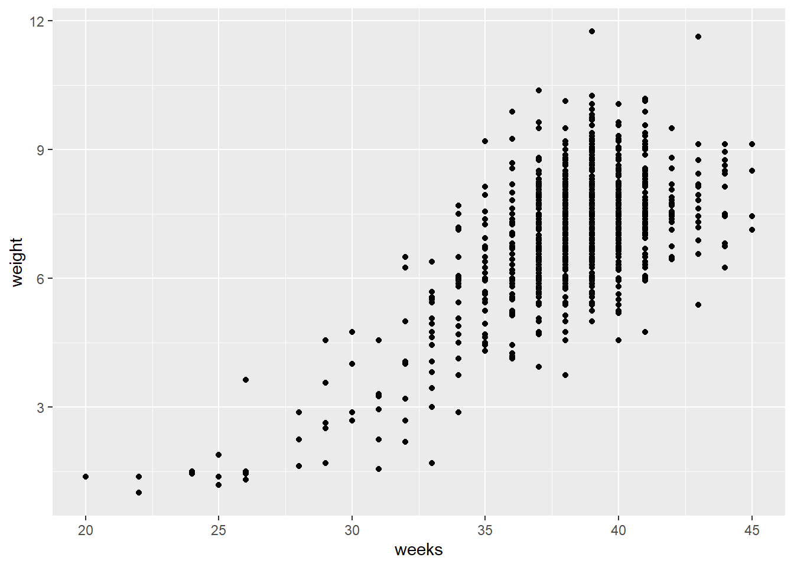
Yardımcı olursa, kutu grafiklerini, x-eksenindeki değişkenin ayrıklaştırıldığı saçılım grafikleri olarak düşünebilirsin.
cut() işlevi iki argüman alır: ayrıklaştırmak istediğin sürekli değişken ve bu sürekli değişkeni ayrıklaştırmak için yapmak istediğin breaks sayısı.
Öncelikle, orijinal weeks değişkenini ayrıklaştıran weeks_cut adında yeni bir değişken oluşturacağız. Dört kesme noktası belirterek cut() işlevini kullanacağız.
Şimdi, yeni weeks_cut değişkenini kullanarak, bu bebeklerin doğum ağırlığının gebelik haftası sayısına göre nasıl değiştiğini gösteren yan yana kutu grafikleri yap.
ggplot(data = ncbirths, aes(x = weeks_cut, y = weight)) +geom_boxplot()
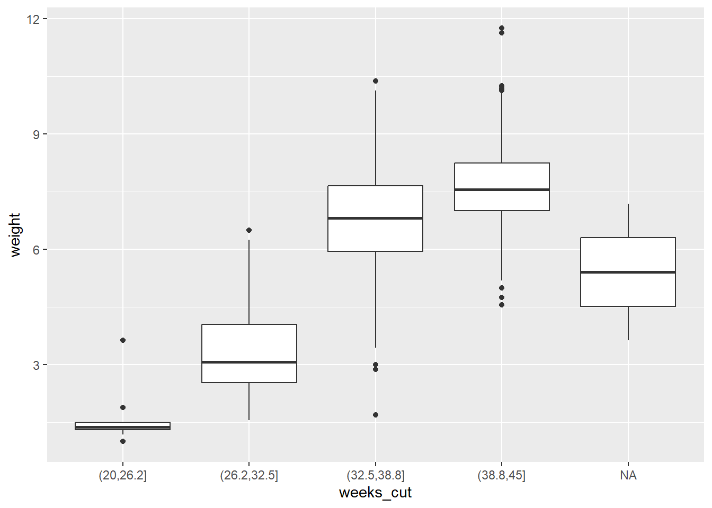
1.3 İki Değişkenli İlişkileri Karakterize Etme
saçılım grafikleri, iki değişken arasındaki ilişkinin özelliklerini ortaya çıkarabilir. Bu grafiklerde gördüğümüz herhangi bir desen—ve bunlardan sapmalar—altında yatan olgunun doğası hakkında bize bazı bilgiler verebilir. Özellikle, dört şeye bakarız: biçim (form), yön (direction), güç (strength) ve olağandışı gözlemler.
Biçim (örn. doğrusal, karesel, doğrusal olmayan)
Yön (örn. pozitif, negatif)
Güç (ne kadar dağınıklık/gürültü var? bazen zayıf veya güçlü ilişki olarak karakterize edilir.)
Olağandışı gözlemler (aykırı değerler)
Biçim, noktaların oluşturduğu genel şekildir. Doğrusal regresyon hakkında öğrendiğimiz için, birincil endişemiz biçimin doğrusal mı yoksa doğrusal olmayan mı olduğudur.
Yön, ya pozitif ya da negatiftir. Buradaki soru, iki değişkenin aynı yönde mi hareket etme eğiliminde olduğu—yani, biri yükseldiğinde, diğeri de yükselme eğiliminde mi—yoksa zıt yönde mi olduğudur.
İlişkinin gücü, mevcut olan dağınıklık miktarı tarafından belirlenir. Noktalar, yakın bir ilişkiyi düşündürecek şekilde bir araya toplanmış mı görünüyor? Yoksa çok gevşek bir şekilde mi organize edilmişler?
Son olarak, genel kalıba uymayan veya basitçe uzakta yatan herhangi bir nokta, araştırılması önemlidir. Genellikle “aykırı değerler” olarak adlandırılan bu olağandışı gözlemler, hatalı ölçümler olabilir veya genel eğilimi netleştirmeye yardımcı olan istisnalar olabilir. Her iki durumda da, bu gözlemler düşündürücü olabilir.
1.3.1 İlişki Grafikleri
# Gerekli paketlerlibrary(ggplot2)library(dplyr)
Warning: package 'dplyr' was built under R version 4.4.3
Attaching package: 'dplyr'
The following objects are masked from 'package:stats':
filter, lag
The following objects are masked from 'package:base':
intersect, setdiff, setequal, union
library(patchwork) # 2x2 düzen içinset.seed(123)# 1. Negatif, Hafifçe Doğrusal Olmayanneg_nonlin <-data.frame(Yas =seq(10, 70, length.out =100),Okunabilirlik =-0.6*seq(10, 70, length.out =100) +0.005* (seq(10, 70, length.out =100) -40)^2+rnorm(100, 0, 5))p1 <-ggplot(neg_nonlin, aes(x = Yas, y = Okunabilirlik)) +geom_point(color ="steelblue") +geom_smooth(method ="loess", se =FALSE, color ="darkblue") +labs(title ="Negatif, Doğrusal Olmayan İlişki",x ="Yaş",y ="İşaret Okunabilirliği" ) +theme_minimal()# 2. İlişki Kanıtı Yokno_relation <-data.frame(X =runif(100, 0, 10),Y =rnorm(100, 0, 1))p2 <-ggplot(no_relation, aes(x = X, y = Y)) +geom_point(color ="gray50") +labs(title ="İlişki Kanıtı Yok",x ="Değişken X",y ="Değişken Y" ) +theme_minimal()# 3. Doğrusal Olmayan (Karesel)quad_relation <-data.frame(X =seq(-5, 5, length.out =100),Y =0.5*seq(-5, 5, length.out =100)^2+rnorm(100, 0, 1))# Aykırı değer ekleyelimquad_relation <-rbind(quad_relation, data.frame(X =-4.5, Y =15))p3 <-ggplot(quad_relation, aes(x = X, y = Y)) +geom_point(color ="darkgreen") +geom_smooth(method ="loess", se =FALSE, color ="black") +labs(title ="Doğrusal Olmayan (Karesel) İlişki",x ="X Değişkeni",y ="Y Değişkeni" ) +annotate("text", x =-4.5, y =15, label ="Aykırı Değer", color ="red", hjust =-0.1) +theme_minimal()# 4. Yelpaze Şekli (Fan Shape) – Sabit Olmayan Varyansfan_shape <-data.frame(X =seq(0, 10, length.out =100))fan_shape$Y <-0.5* fan_shape$X +rnorm(100, 0, 0.3* fan_shape$X) # varyansı artırıldıp4 <-ggplot(fan_shape, aes(x = X, y = Y)) +geom_point(color ="purple") +geom_smooth(method ="lm", se =FALSE, color ="black") +labs(title ="Yelpaze Şekli n (Sabit Olmayan Varyans)",x ="X Değişkeni",y ="Y Değişkeni" ) +theme_minimal()# 2x2 yerleşim(p1 | p2) / (p3 | p4)
`geom_smooth()` using formula = 'y ~ x'
`geom_smooth()` using formula = 'y ~ x'
`geom_smooth()` using formula = 'y ~ x'
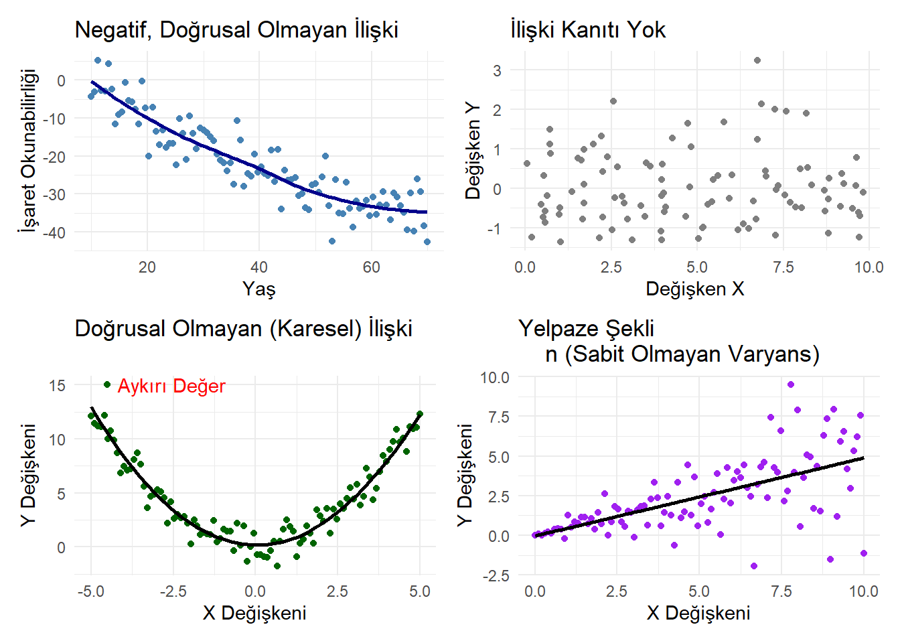
Bu, \(y\)-değerlerindeki değişkenliğin (\(y\)’nin yayılımı) \(x\)’in daha büyük değerleri için arttığını gösteren “sabit olmayan varyans”ın bir göstergesidir. Genellikle, log-dönüşümleri bu tür yelpaze şekillerini ” taming evcilleştirmede” harika bir iş çıkarır ve dönüştürülmüş veriler üzerinde doğrusal bir regresyon modeli kullanmamıza olanak tanır.
1.3.2 Alıştırma 1: sabit olmayan varyans
mammals veri kümesini kullanarak, bir memelinin beyin ağırlığının (brain_wt) vücut ağırlığının (body_wt) bir fonksiyonu olarak nasıl değiştiğini gösteren bir saçılım grafiği oluştur.
İki değişken arasındaki ilişki doğrusal olmayabilir. Bu durumlarda, verilerin saçılım grafiğinde garip ve hatta anlaşılmaz desenler görebiliriz. Bazen gerçekten iki değişken arasında anlamlı bir ilişki yoktur. Diğer zamanlarda ise, bir veya her iki değişkenin dikkatli bir dönüşümü, net bir ilişkiyi ortaya çıkarabilir.
Önceki bir alıştırmada memelilerdeki beyin ağırlığı ve vücut ağırlığı arasındaki saçılım grafiğinde gördüğünüz tuhaf deseni hatırlayın. Bu ilişkiyi netleştirmek için dönüşümleri kullanabilir miyiz?
ggplot2, dönüştürülmüş ilişkileri görüntülemek için birkaç farklı mekanizma sağlar. coord_trans(), grafiğin koordinatlarını dönüştürür. Alternatif olarak, scale_x_log10() ve scale_y_log10() , her eksenin log (taban-10) dönüşümünü gerçekleştirir.
Önceki saçılım grafiğimizi hem vücut ağırlığının (body_wt) hem de beyin ağırlığının (brain_wt) logaritmasını (taban-10) alarak dönüştürmek için her iki yöntemi de kullanma pratiği yapalım.
1.4.1coord_trans() Kullanarak Dönüşüm
İlk olarak, orijinal saçılım grafiğimizi hem x hem de y ekseninin "log10" ölçeğinde olması için değiştirmek üzere coord_trans() işlevini kullanalım.
Diğer noktalarla uyuşmayan gözlemler “aykırı değerler” olarak kabul edilebilir. Bir aykırı değeri neyin oluşturduğuna dair evrensel, katı ve hızlı bir tanım olmasa da, bir saçılım grafiğinde genellikle kolayca fark edilirler.
1.5.1 Şeffaflık Ekleme (alpha)
saçılım grafiğinde noktaların üst üste binmesini (overplotting) engellemek için, alpha argümanını kullanarak noktalara şeffaflık ekleyebiliriz. Bu, üst üste binmenin nerede daha koyu noktalar olduğunu görmemizi sağlar.
Başka bir yaklaşım da, kutu grafiklerinde yaptığımız gibi, grafiğe biraz jitter (rastgele hafif kaydırma) eklemektir!
Warning: Removed 2 rows containing missing values or values outside the scale range
(`geom_point()`).
Removed 2 rows containing missing values or values outside the scale range
(`geom_point()`).
Removed 2 rows containing missing values or values outside the scale range
(`geom_point()`).
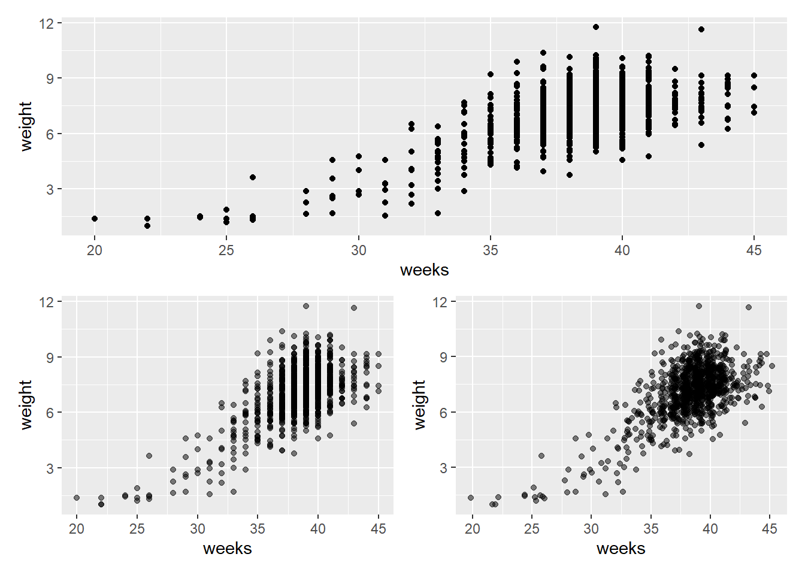
2 Korelasyon
Korelasyon, bu doğrusal ilişkinin gücünü sayısal olarak ifade etmenin bir yoludur.
Korelasyon katsayısı, doğrusal bir ilişkinin gücünü gösteren, -1 ile 1 arasında bir sayıdır. Korelasyon katsayısının işareti ilişkinin yönüne—pozitif veya negatif—karşılık gelir. Korelasyonun büyüklüğü ise gücüne karşılık gelir—0’a yakın değerler daha zayıf, 1 veya -1’e yakın değerler ise daha güçlüdür.
# Gerekli paketlerlibrary(ggplot2)library(dplyr)library(patchwork)set.seed(123)n <-100x =rnorm(n)# Veri üretimi (doğru işaretlerle)data1 <-data.frame(x, y = x*2,Korelasyon ="Neredeyse Mükemmel Pozitif")data2 <-data.frame(x , y = x*0.8+rnorm(n, 0, 0.4),Korelasyon ="Güçlü Pozitif")data3 <-data.frame(x , y = x*0.5+rnorm(n, 0, 0.8),Korelasyon ="Orta Düzey Pozitif")data4 <-data.frame(x , y = x*0.2+rnorm(n, 0, 1),Korelasyon ="Zayıf Pozitif")data5 <-data.frame(x , y =rnorm(n),Korelasyon ="Sıfır Korelasyon")data6 <-data.frame(x , y =-x*0.8+rnorm(n, 0, 0.4),Korelasyon ="Negatif Korelasyon")# Birleştirmedata_all <-bind_rows(data1, data2, data3, data4, data5, data6)# Korelasyon hesaplayıp başlığa ekleyelimdata_summary <- data_all %>%group_by(Korelasyon) %>%summarise(r =round(cor(x, y), 2))# Korelasyon değerini etikete ekledata_all <-left_join(data_all, data_summary, by ="Korelasyon")# Grafikp <-ggplot(data_all, aes(x = x, y = y)) +geom_point(alpha =0.7, color ="#0072B2") +geom_smooth(method ="lm", se =FALSE, color ="red", linewidth =1) +facet_wrap(~ Korelasyon, scales ="free", ncol =3) +labs(x ="Değişken X", y ="Değişken Y",title ="Farklı Korelasyon Düzeylerinde X-Y İlişkileri") +theme_minimal(base_size =14) +theme(strip.text =element_text(face ="bold", size =13),plot.title =element_text(hjust =0.5, face ="bold"),panel.grid.minor =element_blank() )p
`geom_smooth()` using formula = 'y ~ x'
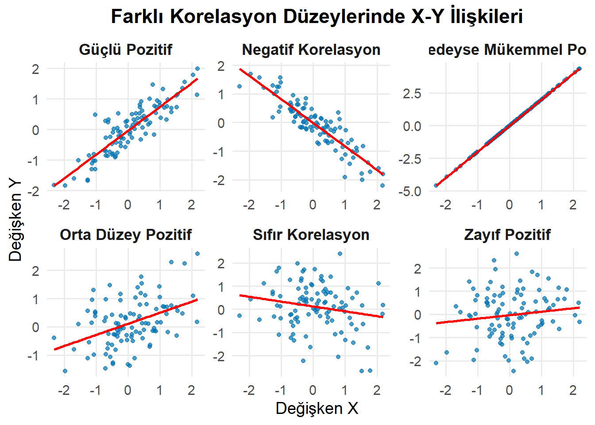
1’e yakın bir korelasyon katsayısı, bu grafikte gördüğümüz gibi, neredeyse mükemmel pozitif korelasyonu gösterir.
2.1 Korelasyonu Hesaplama
İstatistik biliminde korelasyonun tanımlanabileceği birkaç farklı yol vardır, ancak açık ara en yaygın olanı Pearson Çarpım-Moment Korelasyonu’dur. “Korelasyon” dediğimizde bu değerden bahsediyoruz, ancak diğer bağlamlarda tercih edilen başka tanımların da olduğunun farkında olmalısınız.
\[
r(x,y) = \frac{\sum_{i=1}^n (x_i - \bar{x})(y_i - \bar{y})}{\sqrt{\sum_{i=1}^n (x_i - \bar{x})^2 \cdot \sum_{i=1}^n (y_i - \bar{y})^2}}
\] Korelasyon en sık \(r\) harfiyle gösterilir ve en yaygın olarak \(x\) ve \(y\) olmak üzere iki değişkenin bir fonksiyonudur.
Tanım, kovaryans ve \(x\) ve \(y\)’nin henüz tanımlamadığımız kareler toplamı cinsindendir.
Bu, yalnızca \(x\)’ler ve \(y\)’ler ile onların ortalamaları olan \(\bar{x}\) ve \(\bar{y}\) kullanılarak yapılan alternatif bir tanımdır.
Paydada, hem \(x\) hem de \(y\)’deki karelenmiş sapmaların toplamını görüyoruz.
2.1.1cor() Fonksiyonunu Kullanma
cor() fonksiyonu, \(x\) ve \(y\) değişkenleri arasındaki Pearson çarpım-moment korelasyonunu hesaplar. Bu nicelik \(x\) ve \(y\)’ye göre simetrik olduğundan, değişkenleri hangi sırayla girdiğiniz önemli değildir. Aynı zamanda, cor() fonksiyonu eksik verilerle (örneğin NA’lar) karşılaştığında çok muhafazakârdır. Değişkenlerden herhangi birinde (\(x\) veya \(y\)) eksik değerler varsa, cor() fonksiyonu NA çıktısını verecektir. use argümanı, karşılaşılan değerlerden herhangi biri NA olduğunda varsayılan olarak NA döndürme davranışını geçersiz kılmanıza olanak tanır. use argümanını "pairwise.complete.obs" olarak ayarlamak, cor() fonksiyonunun \(x\) ve \(y\) değerlerinin her ikisinin de eksik olmadığı gözlemler için korelasyon katsayısını hesaplamasına olanak tanır.
Bu alıştırmada, ncbirths veri setindeki bebeklerin doğum ağırlığı (weight) ile annenin yaşı (mage) arasındaki korelasyonu hesaplamak için cor() fonksiyonunu kullanalım
ncbirths |>summarize(N =n(), r =cor(weight, mage))
2.2 Korelasyon grafiği
library(Hmisc)
Warning: package 'Hmisc' was built under R version 4.4.3
Attaching package: 'Hmisc'
The following objects are masked from 'package:dplyr':
src, summarize
The following objects are masked from 'package:base':
format.pval, units
library(corrplot)
corrplot 0.95 loaded
data <- mtcars# rcorr fonksiyonu hem korelasyon (r) hem de p-değerini verircorr_res <-rcorr(as.matrix(data))# Korelasyon matrisir <- corr_res$r# p-değerleri matrisip <- corr_res$P
corrplot() fonksiyonu ile korelasyon matrisini görselleştirebiliriz.
corrplot(r) # diyagonal değerleri gösterme
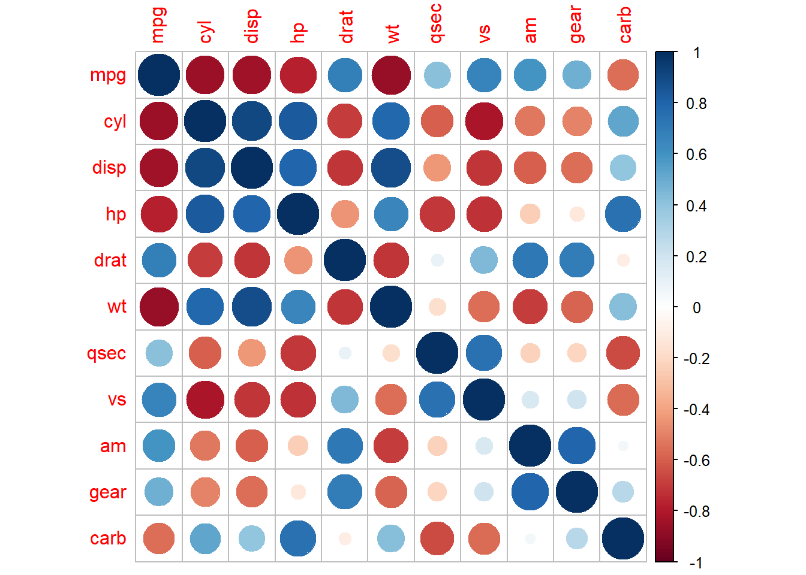
corrplot() fonksiyonun argümanlarını kullanarak grafiği özelleştirebiliriz.
corrplot(r,method ="square", outline = T,addgrid.col ="darkgray", type ="lower",order="hclust")
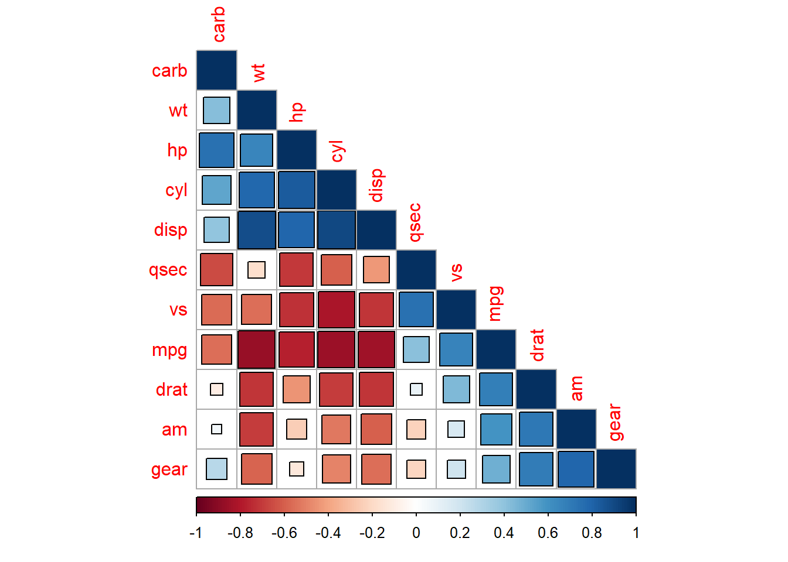
ggcorrplot fonksiyonu ile korelasyon matrisini görselleştirebiliriz.
library(ggcorrplot)
Warning: package 'ggcorrplot' was built under R version 4.4.3
corPlot fonksiyonu ile korelasyon matrisini anlamlılık düzeyleri ile görselleştirebilirsiniz.
library(psych)
Warning: package 'psych' was built under R version 4.4.3
Attaching package: 'psych'
The following object is masked from 'package:Hmisc':
describe
The following objects are masked from 'package:ggplot2':
%+%, alpha
corPlot(mtcars[, 2:5],stars =TRUE)
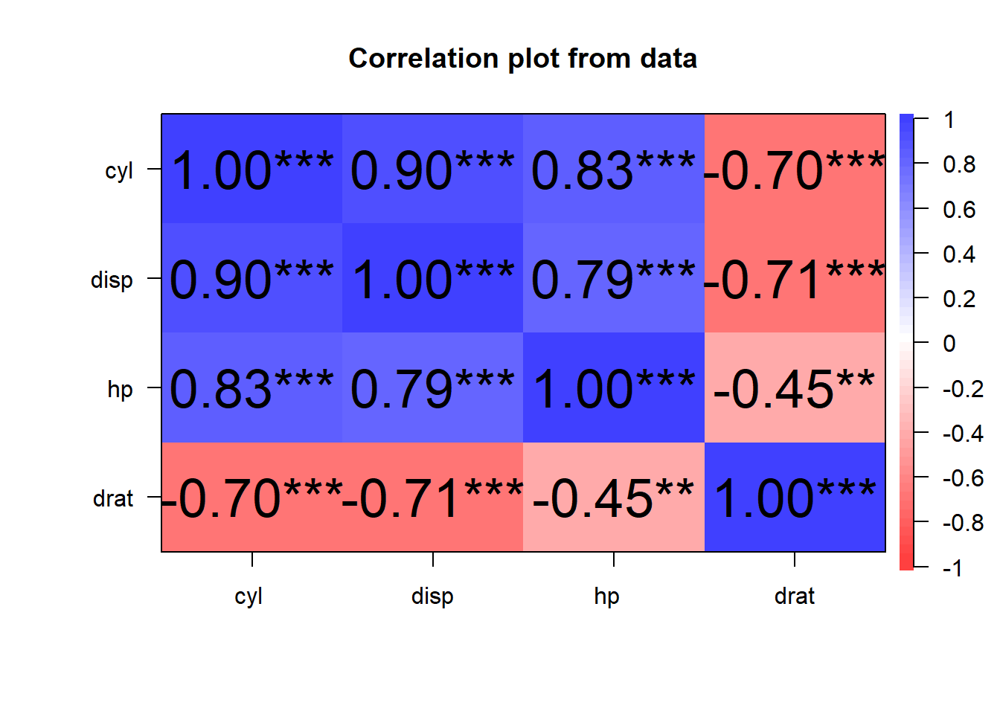
chart.Correlation fonksiyonu ile korelasyon matrisini görselleştirebilirsiniz. Değişkenlerin dağılımını da inceleyebilirsiniz.
library(PerformanceAnalytics)
Loading required package: xts
Loading required package: zoo
Warning: package 'zoo' was built under R version 4.4.3
Attaching package: 'zoo'
The following objects are masked from 'package:base':
as.Date, as.Date.numeric
######################### Warning from 'xts' package ##########################
# #
# The dplyr lag() function breaks how base R's lag() function is supposed to #
# work, which breaks lag(my_xts). Calls to lag(my_xts) that you type or #
# source() into this session won't work correctly. #
# #
# Use stats::lag() to make sure you're not using dplyr::lag(), or you can add #
# conflictRules('dplyr', exclude = 'lag') to your .Rprofile to stop #
# dplyr from breaking base R's lag() function. #
# #
# Code in packages is not affected. It's protected by R's namespace mechanism #
# Set `options(xts.warn_dplyr_breaks_lag = FALSE)` to suppress this warning. #
# #
###############################################################################
Attaching package: 'xts'
The following objects are masked from 'package:dplyr':
first, last
Attaching package: 'PerformanceAnalytics'
The following object is masked from 'package:graphics':
legend